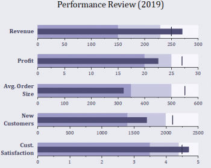
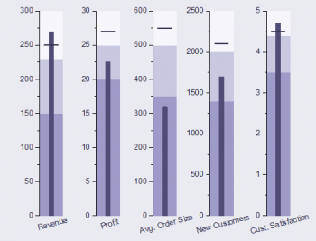
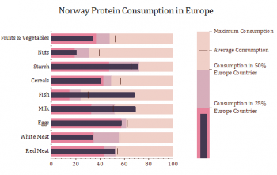
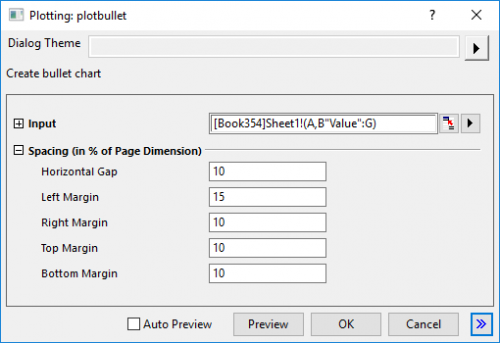

Bullet-Diagramm
Bullet-Chart
|
Bullet-Diagramm
|
Vertikales Bullet-Diagramm
|
|  |
 |
|
Normalisiertes Bullet-Diagramm
|
|
|  |
|
Datenanforderungen
Wählen Sie mindestens Y-Spalten aus: Das erste Y stellt den tatsächlichen Wert dar, das zweite Y den Zielwert. Die restlichen Y zeigen die qualitativen Leistungsbereiche an.
Diagramm erstellen
Wählen Sie die gewünschten Daten aus.
Wählen Sie
Wenn Sie die erforderlichen Daten ausgewählt und das Menü oben gewählt haben, wird ein Dialog "Plotting: plotbullet" aufgerufen, in dem Sie die Abstände zwischen und um die Layer anpassen können.

Vorlage
Bullet.otpu; BulletVerti.otpu; BulletNormal.otpu (installiert im Origin-Programmordner)
Hinweise
- Eingabe könnte sein XYY(YY...). Die erste Y-Spalte sollte der aktuelle Wert sein, gezeichnet als ein dünner Balken; die zweite Y-Spalte sollte als Punktdiagramm gezeichnet werden, dessen Symbolform ein vertikaler Balken ist; die dritte und weiteren Y-Spalten sind optional und werden als inkrementelle gestapelte Balken gezeichnet.
- Reihenfolge der Diagrammtypen: Inkrementelle gestapelte Balken --> Dünner Balken --> Streupunkte
- Jede Zeile sollte als ein Layer gezeichnet werden, und jeder Layer sollte in einer Säule gestapelt werden.
- Das vertikale Bullet-Diagramm zeichnet Balken in Säulen und verwendet die horizontale Balkenform als Symbol. Jeder Layer sollte in einer Zeile gestapelt sein.